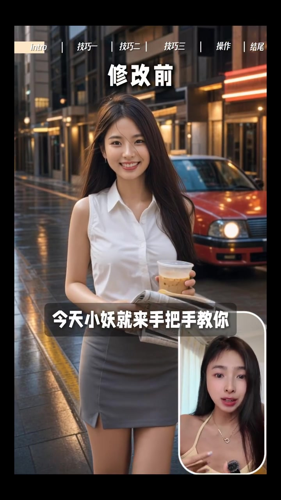
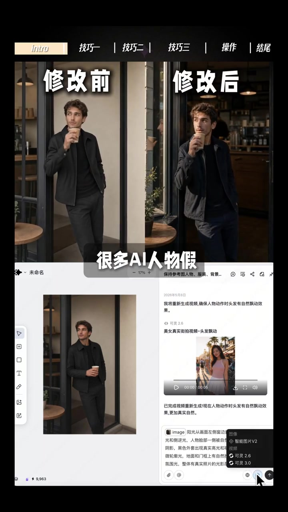
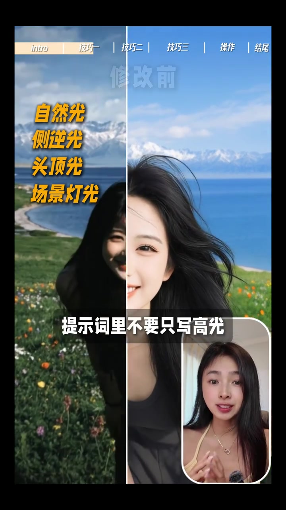
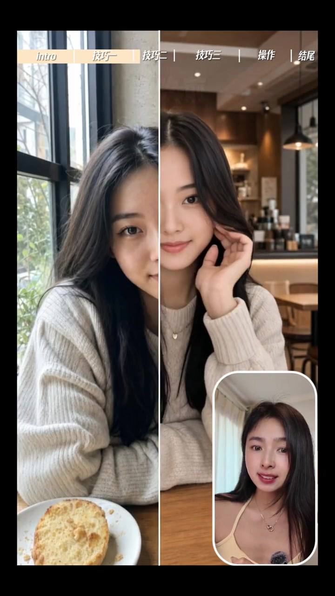
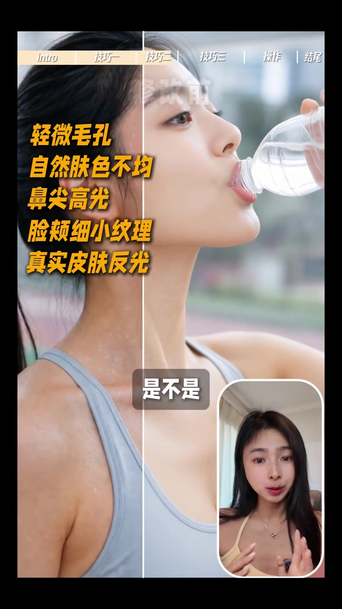
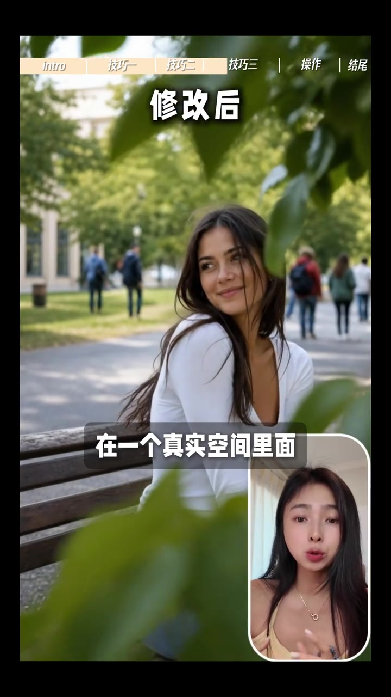
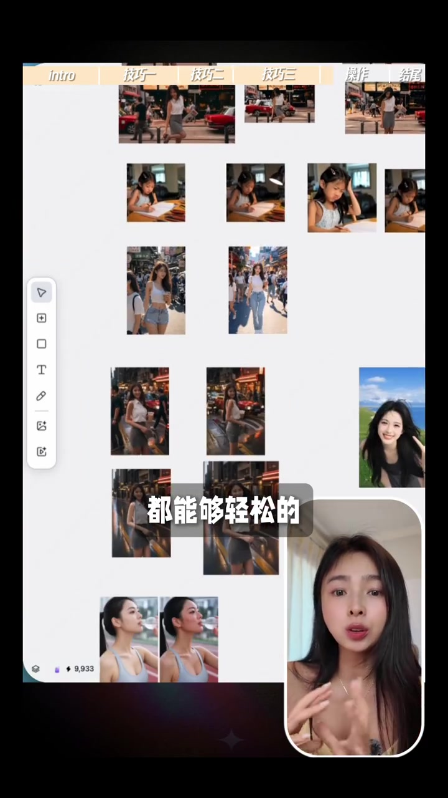

开场：同样一张图，只改提示词
视频顶部章节条写着 Intro｜技巧一｜技巧二｜技巧三｜操作｜结尾。画面先甩出“修改前”人像：阳光明媚的街头女生、手持冰淇淋，右下角是讲述者小妖的画中画。
说明：Whisper 把「技巧一／廉价感／真实街拍／精准／XL／同级／内置链／每周／玩法」等误识为音近字；下文叙事以可见字幕与画面为准，文末转录区仍完整保留全部原始分段。
下一组也是“修改前”——夜色湿街、红车、女生拿报纸和冰饮。字幕打出：“今天小妖就来手把手教你”。她先定调：问题往往不在模型，而在提示词太干净；改完提示词，真实感会立刻不一样。
可见字幕校正：“今天小妖就来手把手教你”“其实不是模型不行，很多时候是你的提示词太干净了。”

加光源：现实里的光一定有方向
章节条仍在 Intro 与技巧一之间切换。画面叠出黄白大字“靠提示词去掉 AI 味”，随后进入咖啡馆侧门青年人像的前后对比，字幕先承认：“很多 AI 人物假”。

小妖解释：假，是因为整张脸被光照得太均匀。现实里的光有方向，有明暗、高光和阴影。左侧竖排列出可写的光源类型：自然光、侧逆光、头顶光、场景灯光。她提醒：提示词里不要只写“高清／真实／电影感”，要写清光从哪里来。
可见字幕：“现实里的光一定有方向”“提示词里不要只写高清、真实和电影感”“你要加上对光影的描述。”

一旦人物有了明确光源，立体感会回来——这是三类提示词里的第一类：加光源，明确光从哪里来。
加皮肤细节：别让人物太完美
咖啡馆毛衣女生的左右构图之后，镜头切到喝水瓶的运动人像特写。章节条高亮“技巧二”。小妖说：AI 脸最容易假的地方，是五官和皮肤太完美，很容易有塑料感。

画面左侧用橙黄字标出可写细节：轻微毛孔、自然肤色不均、鼻尖高光、脸颊细小纹理、真实皮肤反光。字幕收束：“是不是一下子就摆脱了 AI 脸的廉价感。”
可见字幕校正：“提示词里面可以加轻微瑕疵”“一下子就摆脱了 AI 脸的廉价感。”

加前景：镜头在真实空间里捕捉人物
公园长椅女生的“修改后”画面叠出字幕：“在一个真实空间里面”。小妖区分两种构图：假的像是人物站在背景前面；真的像是镜头在空间里抓拍。于是提示词要写前景遮挡、中景人物清晰、前景虚化——书架边缘、玻璃反光都可以。
可见字幕校正：“这层遮挡关系会让画面更像真实街拍，而不是 AI 生成的图片。”

精准提示词 + XL 画布演示
章节进入“操作”。画面切到白色无限画布：多组人像缩略图铺开，右侧是对话式生成面板。字幕说“都能够轻松的……”，并明确：“今天的所有素材，我都是在 XL 上生成的。”她还提到新出的 Image 2 模型／智能图片 V2 同级能力，以及内置链降低门槛，并支持画布上批量图片和视频操作。

结尾章节条高亮“结尾”。小妖用三行黄字复盘：一，加光源，明确光从哪里来；二，加皮肤和材质细节，别让人物太完美；三，加前景、景深和运镜，让画面真的像被拍出来。字幕提醒“记住这 3 类提示词”，让你的 AI 不像 AI。
结尾清单（画面原文）：一，加光源，明确光从哪里来。二，加皮肤和材质细节，别让人物太完美。三，加前景、景深和运镜，让画面真的像被拍出来。
这一分钟多，视频实际做了什么
它没有教你换模型玄学，而是把“塑料感”拆成三类可写进提示词的物理线索：光有方向、皮肤有瑕疵、镜头有空间层次；再用 XL 画布证明同一套提示可以批量落地。